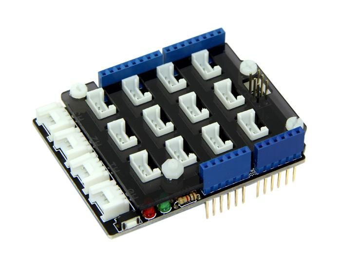
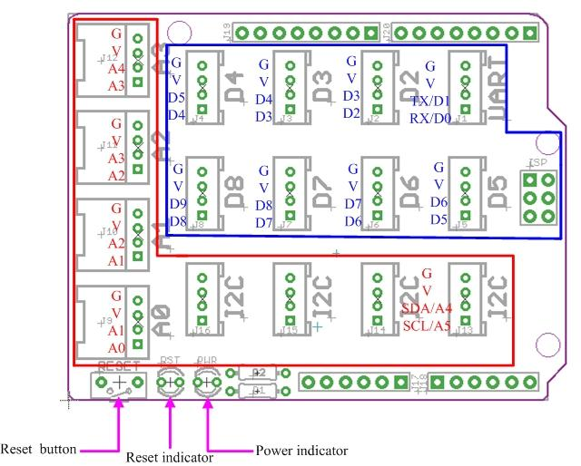
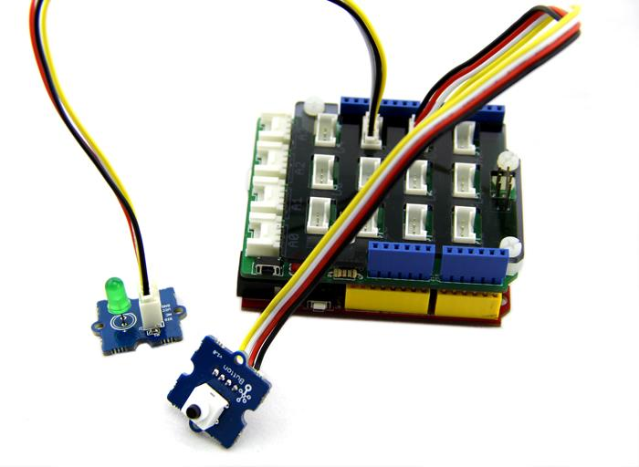

Grove - Base Shield V1.3 has a similar shape to Arduino, which enables exact reflections of each I/O pins. Users could easily connect the Base Shield’s I/O ports to Arduino’s I/O ports even without knowing their exact locations. Additionally, each socket includes VCC, GND and two I/O pins, and have names printed on the side. This 1.3 version focuses on the simplicity of the interface and convenience of operation, making it even easier to use for newbies.
Model: SLD01099P

The purpose of the base shield is to allow easy connection of any microprocessor input and output pins to the Grove units. For a more detailed examination of the Base Board, please refer to the following diagram:

These are analog interface in the red area and digital area interface in blue area.
Note:
1. The staggered alignment of the pins – that is, D2 socket handles D2 and D3, the next D3 and D4, and so on. It is the same as the Analog I/O sockets.
2. UART Socket can multiplex with D0, D1 port and I2C Socket can multiplex with A4, A5 port.
3. It does not conflict if use four I2C Sockets simultaneously because every I2C device has its own address. But once you select one of four I2C Sockets as A4 or A5 pin, the other I2C Socket cannot be used anymore.
4. There is no SPI socket. Since none of the Grove module is using SPI socket.
Here is a specific example for the using of Base Shield.
Connect the Grove-Button and D2 on the Base Shield with a Grove cable , then the Grove-LED and D3.You can change to the digital port as you like. But don't forget to change the port number in the definition of the code at the same time.

CODE:
/*
The circuit:
* LED attached from pin 3 to ground
* Button attached to pin 2 from +5V
* 10K resistor attached to pin 2 from ground
* Button Control An LED
*/
int button = 2; //the Grove port No. you attached a button to
int LED = 3; //the Grove port No. you attached an LED to
void setup(){
pinMode(button, INPUT); //set button as an INPUT device
pinMode(LED, OUTPUT); //set LED as an OUTPUT device
}
void loop(){
int buttonState = digitalRead(button); //read the status of the button
if(buttonState == 1) //get pressed on
digitalWrite(LED,1); //turn on the LED
else
digitalWrite(LED,0); //or not
}
Note: If you are going to use Groves which have two signal pins simultaneously, connectors for two signal Grove modules cannot be plugged next to each other. It is because once plugged in, one connector will occupy both the port(e.g. D3) and the port next to it(e.g. D4) .
Grove-Base Shield v1.3 Eagle File
Grove-Base Shield v1.3 Schematic